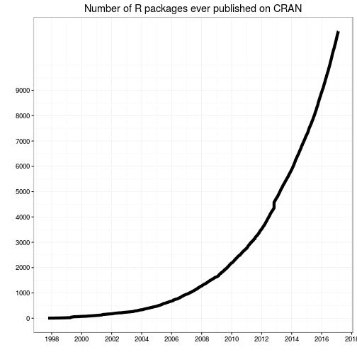
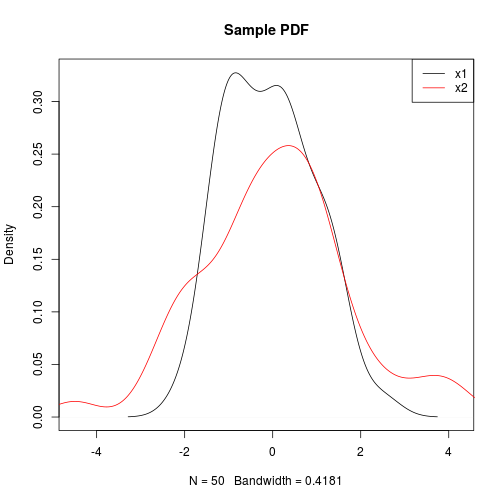
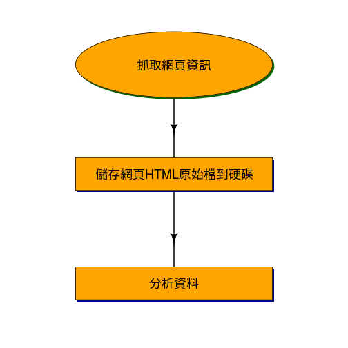

- 學經歷
- 國立台灣大學電機工程學研究所博士生
- 宇匯知識科技與通用移動的資料科學家
- Taiwan R User Group 共同創辦人
- 許多R 套件的貢獻者，例如：digest、knitr、swirl與FeatureHashing
R 語言翻轉教室
Wush Wu
國立台灣大學
Wush Wu
本次課程目錄
- R 的簡介
- R 的傳統用途
- 近代R 的演變
- 安裝R 與Rstudio
- R 的開發環境簡介
- R 的套件系統
- R 語言翻轉教室
R 簡介
R 很容易和其他工具整合
R 很容易擴充和客製化

R 的傳統用途
範例 - 探索數據的分佈
- 統計很多理論都需要常態分佈
- 但是一組數據真的是常態分佈嗎？
範例 - 探索數據的分佈
plot(density(x))
範例 - 探索數據的分佈
- 做「是否為常態分佈」的統計檢定？再一行：
shaprio.test(x)
Shapiro-Wilk normality test
data: x
W = 0.92375, p-value = 2.238e-05
範例 - 探索數據的分佈
- 比較兩個數據是不是來自相同的分佈？沒問題
plot(density(x1), xlim = range(c(x1, x2)), main = "Sample PDF")
lines(density(x2), col = 2)
legend("topright", c("x1", "x2"), lty = 1, col = 1:2)
範例 - 探索數據的分佈

範例 - 探索數據的分佈
- 檢定？
ks.test(x1, x2)
Two-sample Kolmogorov-Smirnov test
data: x1 and x2
D = 0.14, p-value = 0.7166
alternative hypothesis: two-sided
R 是做統計的首選工具之一
- 內建大量統計相關的功能
- 繪製統計圖表、進行統計檢定...
- 擁有大量第三方開發的統計套件
- 範例：supc 一個實做(Shiu and Chen 2016)的R 套件
資料科學，不只是統計...
- 收集數據
- 清理數據
- 大量數據
- 分析結果的呈現
來自R 社群的貢獻
什麼是社群？
- R Core Team
- Package Developers
- R-User Mailing List
社群的力量
- 工具的可靠性
- 使用者的人數決定工具的可靠度，付錢的工具不一定可靠（要夠紅）
- 開發的速度
- 工程師很貴
- 社群會幫忙的開發與測試（要夠紅）
- 開發的方向
- 社群會給發展方向的回饋（要夠紅）
範例 - 相關性
- R 擁有許多你想像不到的方式來探索數據
- 他們都來自於世界各地的貢獻者
範例 - 相關性
suppressPackageStartupMessages(library(PerformanceAnalytics))
chart.Correlation(iris[-5], bg=iris$Species, pch=21)

範例 - 經濟學人風格的視覺化
近代R 的演變
資料科學不只是分析資料
- 傳統的R對於以下的功能有限：
- 資料的收集
- 資料的清理
- 報表的呈現
R Core Team (主導者) v.s. R Packages (社群)
- R Core Team 對新需求的要求很保守
- 正確姓是絕對的
- 向下相容: 新功能要能在十年前的電腦上運作
- Community: 那我們就自己寫套件來玩
- GitHub · Build software better, together
- Hadley降低了寫套件的難度
我們仍然對R Core Team 非常尊敬
- 現在已經有 70000+ 次的更動
- 在2009年10月9日時達到50000次更動 by Prof. Ripley
資料的收集
- R 可以寫網路爬蟲
- httr, xml2, rvest, ...
- R 可以讀取、處理許多資料格式
常見的處理手法

範例：政府招標資訊網
- 中華民國政府電子採購網
- 利用決標查詢功能來瀏覽與抓取決標資料
- 時間範圍自2013年10月至2015年11月
- 一共108360筆決標資料
- 決標資料內容：
- 機關資料，如：名稱、地址、聯絡人與聯絡電話等
- 採購資料，如：案號、招標方式、決標方式、標的分類、辦理方式與相關法源依據等
- 投標廠商，如：廠商統編、名稱、決標金額等
- 決標品向，如：品向名稱以及得標廠商的相關資料
- 決標資料，如總決標金額、履約執行機關等
範例：政府招標資訊網
- 挖掘公司之間的關係